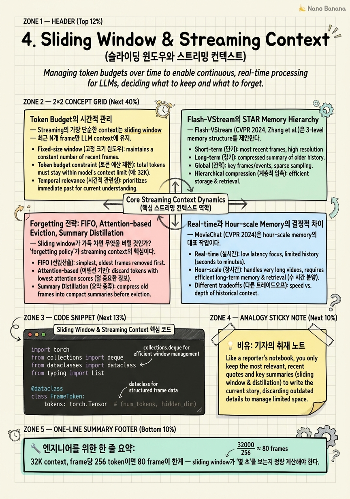

Sliding Window & Streaming Context

🎯 학습 목표
- Streaming context를 sliding window로 관리할 때의 token budget 계산을 할 수 있다
- Fixed window vs adaptive window의 quality/latency trade-off를 설명할 수 있다
- Flash-VStream의 STAR memory hierarchy 각 tier의 역할을 구분해 설명할 수 있다
- FIFO, attention-based, summary distillation 같은 forgetting 전략을 비교 선택할 수 있다
- MovieChat 같은 hour-scale memory를 real-time에 그대로 못 쓰는 이유 (pre-processing 가정)를 설명할 수 있다
Sampling 결정이 끝났으면 다음 문제는 '얼마나 멀리 과거를 기억할 것인가'다. 일반 video LLM에서는 비디오 길이가 짧으니 모든 sampled frame을 context에 넣었다. Hour-scale에서는 MovieChat, MA-LMM 같은 hierarchical memory가 답이었다. Real-time에서는 이 둘 다와 다른 새로운 문제가 된다.
결정적 차이: Hour-scale의 memory hierarchy는 비디오 전체를 미리 본 다음 chunk 단위로 압축한다. 1시간 영화를 받으면 5분씩 잘라 short-term, long-term memory를 만든다. 비디오가 정해진 길이가 있다. Real-time에서는 비디오 끝이 없다. 24시간 카메라는 24시간 동안 메모리가 단조 증가해선 안 된다. 그리고 미래에 어느 시점이 중요할지 알 수 없으므로 'pre-process하고 끝'이 불가능하다.
이 챕터에서는 streaming-native context 관리를 다룬다. Sliding window의 기본 골격, Flash-VStream (CVPR 2024)의 STAR memory hierarchy가 hour-scale의 memory를 어떻게 streaming-friendly하게 재설계했는지, 그리고 forgetting을 design choice로 다루는 방법을 본다.
Mental model shift: Offline (general) = '모든 frame을 context에'. Hour-scale = 'hierarchical memory로 압축'. Real-time = 'tier 사이를 frame이 시간에 따라 이동하며, oldest tier에서 forget'. 시간이 메모리의 dimension이 되는 게 핵심이다.
핵심 내용
Token Budget의 시간적 관리
Streaming의 가장 단순한 context는 sliding window — 최근 N개 frame만 LLM context에 넣고, 새 frame이 들어오면 오래된 것을 밀어냄. 단순하지만 token budget 계산은 비단순하다.
Vision encoder가 frame당 얼마의 token을 만드는가? CLIP ViT-L/14가 frame당 256 patch token (518×518 input, 14×14 patch). Q-Former가 32 query token으로 압축. LLaVA-style은 보통 frame당 144-256 token. Frame 32개 = 8000-16000 token. 이게 sliding window의 기본 비용이다.
LLM의 context는 보통 8K-32K. 32K context에서 시스템 prompt + 사용자 turn + response를 빼면 video를 위한 budget이 20K 정도. Frame당 256 token이면 80 frame이 한계. 30 FPS에서 80 frame = 2.7초. 즉 sliding window가 'recent 2-3초'만 본다는 뜻이다.
Real-time conversational에서 이 budget이 충분한가? 'what just happened' 류 질문은 OK. 'what was the third object you saw' 류 질문은 fail. Window 크기 = 'how far back the model can reason'의 명시적 limit.
해결책 1: token compression — frame당 token 수를 줄임. Pixel Shuffle (LLaVA-NeXT), Q-Former resampler, TokenLearner. Frame당 64 token으로 줄이면 4배 더 긴 window 가능. 다음 챕터에서 자세히.
해결책 2: adaptive window — 모든 시점에서 같은 N이 아니라, 정보 밀도에 따라 동적 조정. 'low motion' 구간은 1 frame/sec로 sample, 'high motion'은 5 frame/sec. 같은 token budget으로 더 의미 있는 frame들.
해결책 3: multi-tier memory — sliding window 밖의 frame을 압축된 형태로 보존. Flash-VStream의 STAR가 그것.
Flash-VStream의 STAR Memory Hierarchy
Flash-VStream (CVPR 2024, Zhang et al.)은 streaming long video QA의 leading 작업 중 하나. 핵심 기여는 STAR memory hierarchy — Spatial-Temporal-Abstract-Retrieved의 4단 메모리 구조.
Spatial memory (turbulent): 가장 최근 frame들의 fine-grained spatial token. 'now에 무엇이 보이는가'를 답할 수 있는 detail 보존. 크기 작음 (수십 frame), 빠르게 회전.
Temporal memory (dynamic): 중간 시간대의 frame들. Spatial detail은 일부 소실되었지만 시간적 흐름은 보존. 'recent minutes에 무슨 변화가 있었나'를 답함.
Abstract memory: 장기간 압축된 high-level representation. 'morning에 누가 들어왔다' 수준의 abstraction. Cross-frame attention으로 만든 summary token.
Retrieved memory (long-term): query-dependent retrieval. 사용자 query가 들어오면 abstract memory의 어떤 부분을 spatial-level까지 unzip할지 결정.
핵심 통찰: frame이 이 4 tier 사이를 시간에 따라 이동한다. 새 frame → spatial → (시간 지나면) → temporal → abstract → (필요 시) retrieved. 각 transition에서 정보가 압축되고, 일부는 forget된다. Hour-scale memory와의 차이: STAR는 모든 transition이 'online'에서 일어난다. MovieChat은 chunk 단위 batched processing — STAR는 frame-by-frame transition.
왜 이게 streaming-native인가? Hour-scale memory (MovieChat, MA-LMM)는 '비디오 끝까지 처리한 후 query'를 가정한다. STAR는 '매 시점에 query 가능'을 가정 — 사용자가 timestep 5분에 질문할 수도, 5시간에 질문할 수도 있다. 그래서 모든 tier가 항상 query-ready 상태여야 한다.
Micro-design 통찰: 왜 4 tier인가, 3 또는 5가 아니라. 3 tier는 'detail-summary' 두 극단 사이의 중간을 한 개만 가짐 — 1분~10분 범위의 query에 부족. 5 tier 이상은 transition overhead가 quality 이득을 상쇄. 4 tier가 logarithmic spacing (sec/min/hour/longterm)에 맞는 sweet spot이라는 게 paper의 디자인 직관이다.
Forgetting 전략: FIFO, Attention-based Eviction, Summary Distillation
Sliding window가 가득 차면 무엇을 버릴 것인가? 'forgetting policy'가 streaming context의 가장 본질적 design choice다.
FIFO (First-In-First-Out): 가장 오래된 frame부터 제거. 단순하고 직관적이다. 'recent N seconds matter most' 가정. 대부분의 baseline이 이것. 단점: 정말 중요한 사건이 N seconds 이전이면 그냥 잊는다.
Attention-based eviction: KV cache의 token 중 attention score가 낮은 것을 제거. StreamingLLM (Xiao et al., ICLR 2024)이 LLM 측에서 사용. Attention sink (첫 몇 token은 모든 query가 보게 되는 패턴) + recent window를 보존, 중간은 evict. Video에 적용 시: 'recent frame과 earliest 몇 frame은 유지, 중간 frame은 attention low면 drop'. 장점: 학습된 importance 반영. 단점: attention 계산 자체가 overhead.
Summary distillation: 오래된 frame들을 직접 버리지 않고 '요약 token'으로 압축. N개 frame을 K개 token으로 (K << N) 줄이는 cross-frame attention. Q-Former 또는 token pooling. 장점: 정보 손실 minimal. 단점: distillation 계산이 main path에 들어가면 latency 증가. 해결: background process로 비동기 distillation.
Hybrid: Flash-VStream STAR가 사실상 hybrid다. Tier 내에서는 FIFO 비슷하게 회전, tier 간 transition은 summary distillation. 이게 production에 가장 가까운 패턴.
결정 기준: 시나리오의 query distribution. 'recent 중심 query'면 FIFO 충분. 'long-range query' 가능성이 있으면 distillation 또는 STAR. Forgetting policy = 사용자가 무엇을 물을 것 같은가에 대한 사전 가정.
시니어 시그널: 후보자가 forgetting을 'bug처럼 막아야 할 것'으로 보는가, 'design choice'로 보는가. 'frame을 버리지 않는 방법'을 찾으려는 답변은 hour-scale 사고에서 못 벗어난 것.
Real-time과 Hour-scale Memory의 결정적 차이
MovieChat (CVPR 2024)은 hour-scale memory의 대표 작업이다. Short-term memory (recent chunk의 detail) + long-term memory (압축된 과거)의 2 tier. STAR와 비슷한 spirit이지만 처리 모드가 다르다.
MovieChat의 처리: 비디오를 받으면 chunk (예: 16 frame)씩 끊어 sequential하게 처리. 각 chunk는 short-term에 들어왔다가, chunk가 끝나면 token consolidation을 통해 long-term으로 압축. 모든 chunk를 본 후 query에 답함. 비디오 길이가 정해져 있고, query는 끝에 한 번 들어온다는 가정.
Real-time에서는? 비디오 끝이 없다. Chunk 단위 batched consolidation이 부자연. 그리고 query는 언제든 들어올 수 있다 — chunk 중간에도, consolidation 중에도.
제약 1: pre-process 불가. Hour-scale memory가 가능한 이유는 '비디오를 한 번 미리 본다'는 가정. Real-time은 매 frame이 들어올 때 'context에 이미 통합되어 있어야' 한다. 즉 online state machine으로 memory가 동작해야 한다.
제약 2: query가 진행 중 발생. 'consolidation 중 query가 오면?' Hour-scale memory는 transactional하지 않다. Real-time memory는 매 timestep query-ready여야 하며, consolidation이 query를 block해선 안 된다 — async pattern이 필수.
제약 3: memory budget의 시간적 단조 증가 금지. Hour-scale은 1시간 비디오에 대한 memory가 1MB든 100MB든 OK. Real-time은 24시간 운영하는데 memory가 단조 증가하면 OOM. 반드시 어딘가에서 forgetting이 일어나야 한다.
STAR가 이 세 가지를 모두 만족시킨다. Online state machine으로 동작, query-ready 상태 유지, oldest tier에서 forgetting. Hour-scale memory의 사상을 streaming 제약 하에 재구현한 작업으로 STAR를 봐야 한다.
Adaptive Window Size: 정보 밀도와 부하의 함수
Fixed window N은 baseline일 뿐 production에서는 거의 안 쓴다. Adaptive window가 두 가지 축으로 동적 조정된다.
Information density 기반: 'low motion' 구간에서는 frame 간 유사도가 높음 → fewer frame으로 sample, 같은 N seconds를 cover. 'high motion'에서는 더 dense하게 sample. 결과: 시간 축 sliding window 크기 (몇 초)는 늘어나고, frame 수는 같음. Token budget을 더 의미 있게 사용.
Motion magnitude를 cheap하게 계산 — frame difference의 L2 norm, optical flow magnitude. 이 signal로 sampling rate를 조정 (chapter 3의 adaptive sampling과 통합).
부하 기반: 모델 처리 capacity가 감당 가능한 만큼만 window 크기 유지. 부하 높으면 window 축소 (덜 본다) → latency 유지. 부하 낮으면 확대 → quality 회복. 이건 controller 문제.
Query-aware: 사용자 query에 따라 'recent 5초'만 보고 답할지, '5분 전'까지 거슬러 갈지 결정. STAR-style multi-tier에서 retrieved memory가 이 역할.
Production 패턴: 3차원 adaptation (정보 밀도 × 부하 × query). 한 차원만 보고 결정하면 시스템이 oscillate한다. 예: 부하만 보고 window 줄였는데 마침 high-information 구간이라 quality drop이 user-visible → 정보 밀도도 함께 봐야 함.
Metric: 'window utilization' — context의 frame token 중 attention이 실제로 들어간 비율. 50% 이하면 window가 너무 큼 (token waste). 95% 이상이면 너무 작음 (정보 부족). 모니터링 metric으로 export.
시니어 시그널: '왜 fixed window가 아니라 adaptive?'에 대해 '정보 밀도, 부하, query' 세 가지 축을 즉시 답할 수 있는가. 한 가지 (부하 또는 정보 밀도)만 답하면 mental model이 incomplete.
💡 비유로 이해하기
General video LLM의 메모리는 학생의 한 학기 수업 노트와 같다. 모든 수업이 끝난 후 노트를 펴고, 시험 문제에 답한다. 모든 내용이 손에 있다. 길이가 한정되어 있다.
Hour-scale의 메모리는 다큐멘터리 작가의 자료 정리실과 같다. 100시간 footage를 봤다. 처음에는 전체 메모를 했고, 그 다음 챕터별로 요약하고, 마지막엔 핵심 키워드와 references만 남겼다. 자료실에 가서 검색 가능. 다만 '내일 새 footage가 100시간 더 들어온다'는 시나리오는 가정 안 함.
Real-time의 메모리는 24시간 운영하는 신문 기자의 노트북이다. 사건이 끊임없이 들어온다. 가장 최근 인터뷰는 한 글자도 빼지 않고 적힌다 (turbulent). 어제 사건은 요약 paragraph로 (dynamic). 한 달 전 사건은 키워드와 함께 reference (abstract). 1년 전 사건은 검색 가능한 archive로 보내고 노트북에서 삭제 (forgotten, retrievable on demand). 기자는 어떤 시점에든 '5분 전 인터뷰에 대해 한 마디' 또는 '6개월 전 그 사건' 양쪽 다 답할 수 있어야 한다.
결정적 차이: 노트북의 크기는 늘어나지 않는다. 가장 오래된 detail은 잊혀야 한다. 그리고 '나는 모든 걸 기억해야 한다'는 기자는 한 달도 못 버틴다. 잊는 능력이 곧 일할 수 있는 능력이다. Real-time memory도 그렇다.
💻 코드 예시
STAR-style tiered memory의 골격. Frame이 시간에 따라 tier 사이를 이동하며, oldest tier에서 forget. Tier 간 transition은 background에서 async로 일어난다.
import torch
from collections import deque
from dataclasses import dataclass
from typing import List
@dataclass
class FrameToken:
tokens: torch.Tensor # (num_tokens, hidden_dim)
timestamp: float
class StreamingMemory:
def __init__(self, spatial_cap=32, temporal_cap=64,
abstract_cap=32):
self.spatial = deque(maxlen=spatial_cap) # recent, detail
self.temporal = deque(maxlen=temporal_cap) # dynamic, mid
self.abstract = deque(maxlen=abstract_cap) # long, summary
def add(self, frame_tokens, ts):
# transition oldest spatial → temporal (compressed)
if len(self.spatial) == self.spatial.maxlen:
old = self.spatial[0]
compressed = self._compress(old, ratio=4)
self.temporal.append(compressed)
self.spatial.append(FrameToken(frame_tokens, ts))
def consolidate_to_abstract(self):
# batch-distill recent temporal into abstract summary
if len(self.temporal) >= 16:
batch = list(self.temporal)[:16]
summary = self._distill(batch, output_tokens=8)
self.abstract.append(summary)
# remove distilled from temporal
for _ in range(16):
self.temporal.popleft()
def get_context(self, query=None):
# query-aware retrieval (skipped for brevity)
ctx = []
for f in self.abstract:
ctx.append(f.tokens)
for f in self.temporal:
ctx.append(f.tokens)
for f in self.spatial:
ctx.append(f.tokens)
return torch.cat(ctx, dim=0)
def _compress(self, frame, ratio):
# mean pooling - production uses learned Q-Former
t = frame.tokens
n = t.shape[0] // ratio
return FrameToken(t[:n*ratio].view(n, ratio, -1).mean(1),
frame.timestamp)
def _distill(self, frames, output_tokens):
all_tokens = torch.cat([f.tokens for f in frames], dim=0)
idx = torch.linspace(0, all_tokens.shape[0]-1,
output_tokens).long()
return FrameToken(all_tokens[idx], frames[-1].timestamp)deque(maxlen=...)가 자동으로 oldest를 forget해주는 게 첫 디자인 결정. add에서 spatial이 가득 차면 oldest를 temporal로 'demote' — token 수를 1/4로 압축. consolidate_to_abstract는 batch로 temporal을 abstract로 distill — main path가 아닌 background timer로 호출하는 것이 production 패턴 (latency budget을 안 갉아먹기 위해). get_context는 abstract → temporal → spatial 순으로 정렬해 LLM에 전달 — 시간순으로 오래된 것부터 최근 순. 실제 production은 _compress/_distill이 학습된 Q-Former이고, get_context가 query-aware retrieval. 핵심 mental model: 'frame은 머무는 게 아니라 시간에 따라 tier를 흐른다'.
🏭 현업에서의 평가
✅ 시니어가 보는 것
- Token budget을 frame 수 × token/frame으로 즉시 계산
- Sliding window의 한계 (recent only)를 인지하고 multi-tier로 확장 사고
- Hour-scale memory의 pre-process 가정이 real-time에 안 맞다는 점 명확히 짚음
- Forgetting을 design choice로 받아들이는 태도
- Window utilization 같은 metric으로 dynamic adaptation 평가
⚠️ 레드 플래그
- '모든 frame을 다 기억해야 한다'는 가정으로 시스템 설계
- Fixed window를 모든 시나리오에 그대로 사용
- Hour-scale memory (MovieChat)를 그대로 real-time에 붙이려 함
- Forgetting을 'bug' 또는 'quality loss'로만 인식, design choice로 못 봄
🎤 예상 인터뷰 질문
- Flash-VStream의 STAR memory hierarchy 4 tier의 각 역할을 설명하고, 왜 3 또는 5 tier가 아닌가에 대한 설계 직관을 답하라.
- MovieChat의 short-term/long-term memory와 STAR의 spatial-temporal-abstract-retrieved의 가장 본질적 차이는 무엇인가? 'pre-process 가능성' 관점에서.
- 32K LLM context, frame당 256 token, 30 FPS 카메라로 'recent 5분'까지 reasoning 가능한 streaming context를 설계하라. Token compression 비율과 sliding window 크기를 정량적으로 계산하라.
✨ 핵심 요약
Token budget = frame 수 × token/frame
32K context, frame당 256 token이면 80 frame이 한계 — sliding window가 '몇 초'를 보는지 정량 계산해야 한다.
Sliding window는 'recent only'
Window 밖의 정보를 어떻게 보존할지 — multi-tier memory가 답.
STAR가 streaming-native memory의 답
Spatial-Temporal-Abstract-Retrieved 4 tier가 logarithmic time spacing에 맞는 sweet spot.
Frame은 tier를 흐른다
새 frame이 spatial → temporal → abstract로 시간에 따라 demote, 결국 oldest에서 forget.
Hour-scale memory의 가정 무너짐
Pre-process, batched consolidation, 끝점 query — 세 가정 모두 real-time에서 무효.
Forgetting policy는 query 분포의 사전
FIFO, attention-based, distillation의 선택은 '사용자가 무엇을 물을 것 같은가'에 대한 가정.
Adaptive window는 3축 동적 조정
정보 밀도, 부하, query 셋 다 보고 동적 조정 — 한 축만 보면 oscillate.
Consolidation은 background
Main inference path를 block하지 않도록 async timer로 tier 간 transition을 수행.